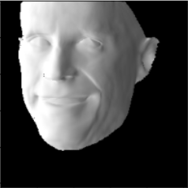
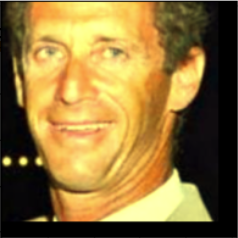
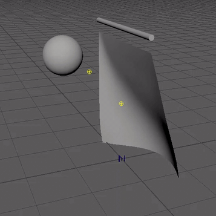
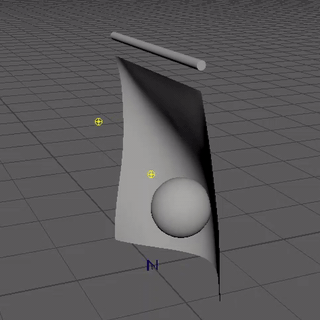
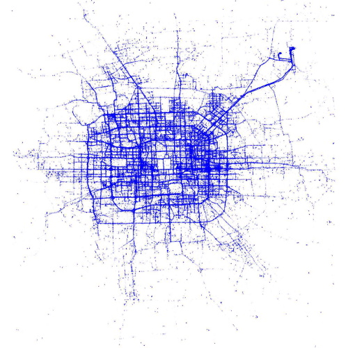
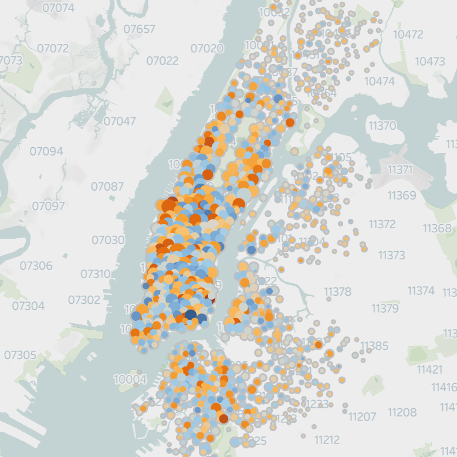

I am a Ph.D. student at The Chinese University of Hong Kong, Shenzhen,
working on human-centric 3D computer vision and graphics, advised by Prof. HAN Xiaoguang.
Previously, I obtained my M.S. from National University of Singapore, advised by Prof. Robby T. Tan.
I received my Bachelor's degree from University of Electronic Science and Technology of China.
I believe simple is better than complex.
I (try to) practice Slow Science. Slow is faster than fast.
My research goal is to develop a system that produces and drives high-fidelity 3D avatars in real-time using limited cost for everyone.
My current research focus is on the generalizability and robustness of NeRF/3DGS-based head avatars learned from large-scale images.
Introduce an efficient Point-Image Transformer that fuses hierarchical 3D point features with multimodal attention to generate high-fidelity, animatable 3D humans from pose-free images.
Propose a hy-plane representation that combines the strengths of tri-plane and spherical tri-plane methods while overcoming their inherent limitations.
Integrate a custom ControlNet and dual appearance module to generate globally consistent 360-degree head views capable of high-quality free-viewpoint rendering for both realistic and stylized head images.
Achieve 3D full-head synthesis without mirroring-face and multiple-face artifacts via spherical tri-plane representation and view-image consistency loss.
A model that enables real-time and zero-shot attribute separation of a given real face, allowing attribute transfer and rendering at novel views without the aid of multi-view information.
Infer 3D face reconstruction in both image space and model space to achieve high robustness and accuracy.
Project


Detailed 3D Face Reconstruction
Reconstruct a detailed 3D face from a single image through self-supervised learning and differentiable rendering-based optimization.


Cloth Simulation via Deep Learning
Use neural networks to represent cloth, external objects, and the environment, and conduct a learning-based cloth simulation.

Vehicle Trajectory Forecasting
Trajectory Forecasting with Neural Networks: An Empirical Evaluation and A New Hybrid Model TITS, 2020
Conduct the most comprehensive evaluation of various models proposed for time series data prediction on vehicle trajectory forecasting task, and propose a hybrid model that combines the merits of MLP and LSTM.

Bike Sharing System
Propose the first neural network-based framework integrated with fuzzy clustering for predicting per-station demand and status in bike-sharing systems, achieving state-of-the-art performance on the New York CitiBike dataset.
Undergraduate Thesis
Gradual Knowledge Distillation
Video-based Human Action Detection.
Undergraduate Degree Thesis, 2020
Gradually distill knowledge from higher-precision model to lower-precision and finally binary model to alleviate the performance deterioration in Quantization.
The website template was borrowed from source code.
{kind=link}